발표자: 박천웅 / 날짜: 2026. 03. 18
기존 detector는 닫힌 클래스(Closed-set) 한계가 존재함
배경 차분이나 motion cue는 노이즈가 많아 실무 적용이 어려움
핵심은 배경과 객체 경계를 얼마나 안정적으로 나누는가에 있음
이 논문은 그 경계를 object discovery 과정 안에서 직접 다룸
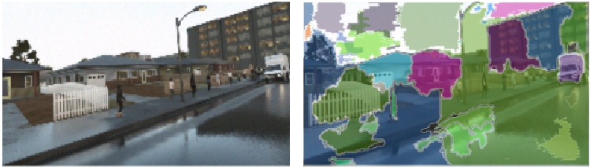
"비지도 상황에서의 배경/객체 분리 어려움"
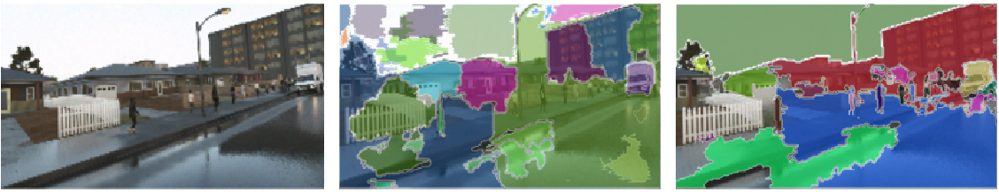
Background Over-segmentation 현상 시각화
일반적인 Motion Segmentation
BMOD의 목표 (True Foreground)
"단순히 움직이는 물체를 찾는 것이 아니라,
Object Discovery와 Separation을 함께 학습하는 것"
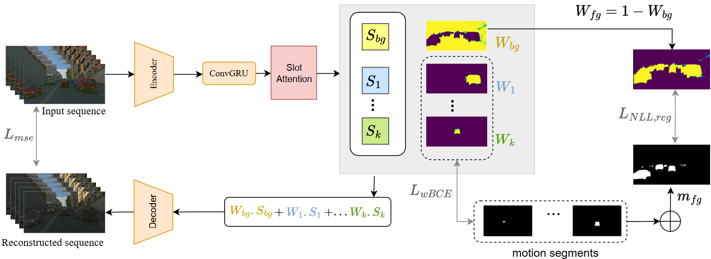
Encoder → ConvGRU → Slot Attention → Reconstruction
"Motion Supervision → Foreground Generalization → Background Isolation"
Moving mask를 최종 정답이 아닌 시작점으로 활용
Static object(예: 주차된 차)까지 포함하도록 학습
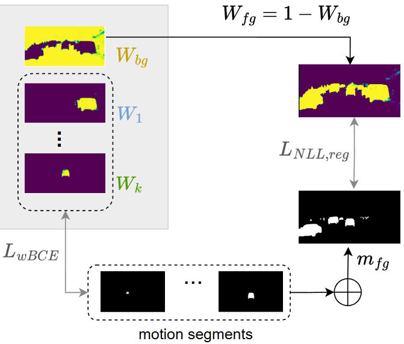
mfg, Wfg, LNLL,reg 시각화
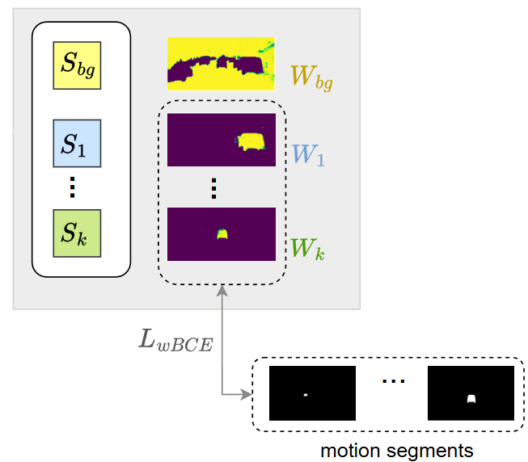
Sbg, Wbg, Weighted BCE 관련 도식
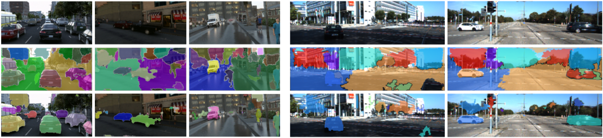
TRI-PD & KITTI 예시 (Input / Baseline / BMOD)
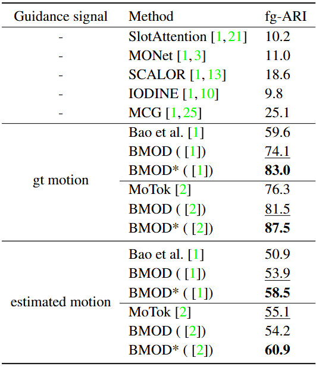
TRI-PD 성능 비교
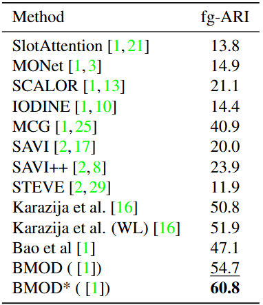
KITTI 성능 비교
핵심: 배경 모델링이 Foreground 객체 탐지 성능(fg-ARI)도 동시에 향상시킴
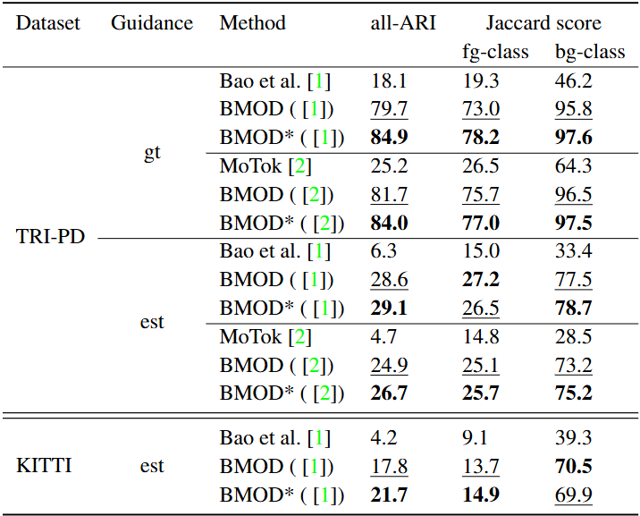
all-ARI 및 Jaccard Score 비교
TRI-PD (estimated motion)
Bao 6.3 BMOD 28.6
KITTI (estimated motion)
Bao 4.2 BMOD 17.8
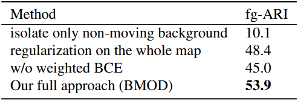
Design Choice 분석
• Naive 설계(Non-moving 직접 할당)는 실패
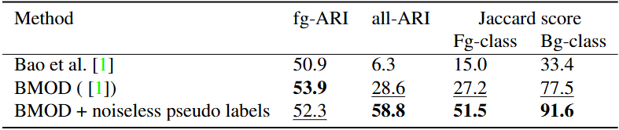
Pseudo-label Noise 분석
• Label 품질 개선 시 성능 대폭 상승 여지 확인
• Change Candidate 품질 관리
• Static Object Retention 전략
• 장기 정지체 해석 및 배경 흡수 방지